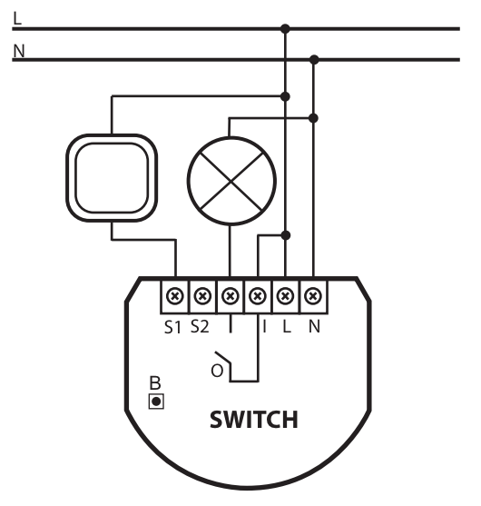
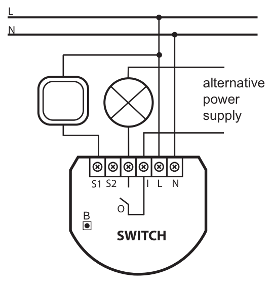
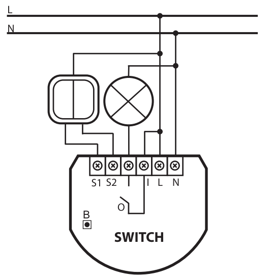
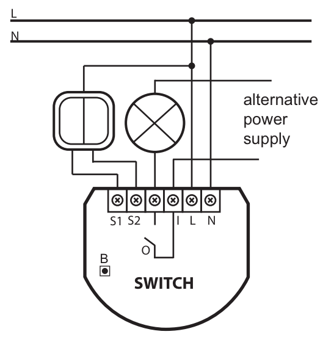

FIB_FGS-211
Relay Insert 1 * 3 KW
Firmware Version
: 1.3
|
 |
Quick Start
To include the Fibaro Switch relay into the network, set the Home Center controller into the inclusion mode and then press the
button of the device or the push-button B located inside the housing of the switch relay three times during 1.5 seconds.
The LED will become green for 3 seconds and then turn off. The device is now ready to work.
Please refer to the chapters below for detailed information about all aspects of the products usage.
|
Product description
The Fibar Insert Switch allows controlling an electrical load both via Z-Wave wirelessly
and locally utilizing a traditional wall switch. The device is placed in a wall box right behind the normal switch.
The switch is not longer directly connected to the load but acts as input device for the Fibar insert that is controlling
the load. The solution works with all switch design with or without neutral position as long as there is enough space in
the wall box behind the switch. The device is just 15 mm height. The available space depends on the size of the traditional
switch, the dimensions of the wall box and the amount of additional cabling placed in this box. This device is designed for
a 3 wire system and needs a neutral wire in the wall box.
Installation Guidelines
The switch insert is designed to fit into standard circular European wall boxes with 60 mm diameter. With its 15 mm height,
it can be also mounted behind traditional wall switches. This wall switch serves as an external control switch to switch loads.
The relay itself is realized in the insert.
The schematics below shows how to wire the actuator. The two wired from the mains distribution panel are connected to
the inserts contacts N and L. Depending on whether the 230 V supply of the switch or an external power supply is
used to power the electrical load, either the 230 V supply or the external power supply has to be connected to the insert
contact I . The electrical load is then connected to the other pole of the 230 V power supply or with the second pole
of the additional power supply.


The switch can be operated locally using a switching paddle installed on the wall box. To connect the switching paddle with the dimmer insert
it has to be connected with the insert contacts S1 and S2 .
The local operation can be realized by a single switching paddle (bistable), a double switching paddle (bistable), a single button
(monostable) or a double button (monostable). The connected switch type must be selected according to the inclusion by setting the configuration
parameter 14. The local switch is connected with the switch insert as shown in the schematics. If a bistable switch is connected it has to stay
connected until the switch is included into the Z-Wave network.
It is also possible to use a double switch for local control. In this case the second switching paddle is only used for wireless control and has no
local function. The diagrams below show the wiring in this case using a 230 V power supply or an alternative power supply.


Behavior within the Z-Wave network
I On factory default the device does not belong to any Z-Wave network. The device needs to join an existing
wireless network to communicate with the devices of this network. This process is called Inclusion.
Devices can also leave a network. This process is called Exclusion. Both processes are initiated by the
primary controller of the Z-Wave network. This controller will be turned into exclusion respective inclusion mode.
Please refer to your primary controllers manual on how to turn your controller into inclusion or exclusion mode.
Only if the primary controller is in inclusion or exclusion mode, this device can join or leave the network.
Leaving the network - i.e. being excluded - sets the device back to factory default.
If the device already belongs to a network, follow the exclusion process before including it in your network.
Otherwise inclusion of this device will fail. If the controller being included was a primary controller, it has to be reset
first.
Blinking red/green LED indicates that the device is in factory reset state.
Once the controller is turned into inclusion mode tripple click the button of the device or the push-button B located inside the housing of
the switch relay to include the device. A green blinking of LED will indicate successfull inclusion that will be turned off shortly
afterwards. The device is excluded by tripple click on one of the buttons when the controller is in exclusion mode.
Operating the device
The switch insert is able to switch different types of electrical loads. The actuator can directly be operated by a local switching paddle.
If the switch is a conventional button, every button impulse will connect the switch ON or OFF. Using a switching paddle instead of a button
the operation is the same with the exception that the switching paddle has to be switched back into the OFF status afterwards manually.
The device is also able to report status changes to a controller (communication pattern 2) and to remotely operate other devices
(communication pattern 5). The switch can be controlled by every Z-Wave device (communication pattern 1, 4 and 7). Any existing second switch
can only be used for remote control of other actuators according to communication pattern 5 and not to control the local switch.
Associations
A Z-Wave devices control other Z-Wave devices. The relationship between one device controlling another device is
called association. In order to control a different device, the controlling device needs to maintain a list of
devices that will receive controlling commands. These lists are called association groups and they are always
related to certain events (e.g. button pressed, sensor triggers, ...). In case the event happens all devices stored
in the respective association group will receive a common wireless command.
Association Groups:
| 1 |
external Switch No 1
(max. nodes in group: 16)
|
| 2 |
external Switch No 2
(max. nodes in group: 16)
|
| 3 |
(max. nodes in group: 1)
|
Configuration Parameters
Z-Wave products are supposed to work out of the box after inclusion, however certain configuration can adapt the
function better to user needs or unlock further enhanced features.
IMPORTANT: Controllers may only allow to configure signed values. In order to set values in the range 128 … 255 the value
sent in the application shall be the desired value minus 256. For example: to set a parameter to 200 it may be needed to set
a value of 200 minus 256 = minus 56. In case of two byte value the same logic applies: Values greater than 32768 may
needed to be given as negative values too.
All on/off function
(Parameter Number 1, Parameter Size 1)
Enables or disabled the all on / all off function
| Value |
Description |
| 0 |
neither ALL ON nor ALL OFF are active |
| 1 |
only ALL OFF is active |
| 2 |
only ALL ON is active |
| 255 |
ALL ON and ALL OFF are active
(Default)
|
Automatic Switching Off after defined time
(Parameter Number 3, Parameter Size 1)
Allows to automatically turn off the relais after a fixed time set in parameter 4
| Value |
Description |
| 0 |
Enabled
(Default)
|
| 1 |
Disabled |
Automated Turn Off Time
(Parameter Number 4, Parameter Size 1)
defines the time to turn off the relais in case parameter no 3 is enabled
| Value |
Description |
| 0
—
255 |
ms
(Default 200)
|
Commands Sent to Association Group 1
(Parameter Number 6, Parameter Size 1)
Defines what status changes cause sending out a wireless command. Zu allow double click function parameter 15 needs to be turned to 1
| Value |
Description |
| 0 |
turning on and turning off sends out a wireless command
(Default)
|
| 1 |
Turning off sends a wireless command. All devices can be turned on using a double click, dimmers will return to their last dimming state. |
| 2 |
Turning ff sends a wireless command. All devices can be turned on using a double click, dimmers will dim to 100 %. |
Bistable Switch State
(Parameter Number 13, Parameter Size 1)
Defines the behavior of a connected bistable switch
| Value |
Description |
| 0 |
ON/OFF sets to change of key state
(Default)
|
| 1 |
ON is active when contacts are closed and OFF is active when contacts are open |
Type of Switch
(Parameter Number 14, Parameter Size 1)
Defines the type of switch attached to the device
| Value |
Description |
| 0 |
mono-stable switch
(Default)
|
| 1 |
bi-stable switch |
Saving of switch state after power-down
(Parameter Number 16, Parameter Size 1)
The device will or will not return to the last switch state after a power down
| Value |
Description |
| 0 |
not return to previous state
(Default)
|
| 1 |
return to previous state |
General Alarm Set - Relay 1
(Parameter Number 30, Parameter Size 1)
This defines the behavior of relay 1 in case of general alarms
| Value |
Description |
| 0 |
Deactivated, devices does not react to alarms |
| 1 |
Disable on Alarm - will switch off in case of alarm |
| 2 |
Enable on Alarm - will switch on in case of alarm |
| 3 |
Flashing on Alarm - will switch on and off periodically for 10 minutes
(Default)
|
Flood Alarm Set - Relay 1
(Parameter Number 31, Parameter Size 1)
This defines the behavior of relay 1 in case of flood alarms
| Value |
Description |
| 0 |
Deactivated, devices does not react to alarms |
| 1 |
Disable on Alarm - will switch off in case of alarm |
| 2 |
Enable on Alarm - will switch on in case of alarm
(Default)
|
| 3 |
Flashing on Alarm - will switch on and off periodically for 10 minutes |
Smoke Alarm Set - Relay 1
(Parameter Number 32, Parameter Size 1)
This defines the behavior of relay 1 in case of smoke alarms
| Value |
Description |
| 0 |
Deactivated, devices does not react to alarms |
| 1 |
Disable on Alarm - will switch off in case of alarm |
| 2 |
Enable on Alarm - will switch on in case of alarm |
| 3 |
Flashing on Alarm - will switch on and off periodically for 10 minutes
(Default)
|
Temperature Alarm Set - Relay 1
(Parameter Number 33, Parameter Size 1)
This defines the behavior of relay 1 in case of temperature alarms
| Value |
Description |
| 0 |
Deactivated, devices does not react to alarms |
| 1 |
Disable on Alarm - will switch off in case of alarm
(Default)
|
| 2 |
Enable on Alarm - will switch on in case of alarm |
| 3 |
Flashing on Alarm - will switch on and off periodically for 10 minutes |
Time of Active Alarm
(Parameter Number 39, Parameter Size 2)
Defines how long a alarm shall be active
| Value |
Description |
| 0
—
20000 |
Seconds
(Default 600)
|
General Alarm Set - Relay 2
(Parameter Number 40, Parameter Size 1)
This defines the behavior of relay 2 in case of general alarms
| Value |
Description |
| 0 |
Deactivated, devices does not react to alarms |
| 1 |
Disable on Alarm - will switch off in case of alarm |
| 2 |
Enable on Alarm - will switch on in case of alarm |
| 3 |
Flashing on Alarm - will switch on and off periodically for 10 minutes
(Default)
|
Flood Alarm Set - Relay 2
(Parameter Number 41, Parameter Size 1)
This defines the behavior of relay 2 in case of flood alarms
| Value |
Description |
| 0 |
Deactivated, devices does not react to alarms |
| 1 |
Disable on Alarm - will switch off in case of alarm |
| 2 |
Enable on Alarm - will switch on in case of alarm
(Default)
|
| 3 |
Flashing on Alarm - will switch on and off periodically for 10 minutes |
Smoke Alarm Set - Relay 2
(Parameter Number 42, Parameter Size 1)
This defines the behavior of relay 2 in case of smoke alarms
| Value |
Description |
| 0 |
Deactivated, devices does not react to alarms |
| 1 |
Disable on Alarm - will switch off in case of alarm |
| 2 |
Enable on Alarm - will switch on in case of alarm |
| 3 |
Flashing on Alarm - will switch on and off periodically for 10 minutes
(Default)
|
Temperature Alarm Set - Relay 2
(Parameter Number 43, Parameter Size 1)
This defines the behavior of relay 2 in case of temperature alarms
| Value |
Description |
| 0 |
Deactivated, devices does not react to alarms |
| 1 |
Disable on Alarm - will switch off in case of alarm
(Default)
|
| 2 |
Enable on Alarm - will switch on in case of alarm |
| 3 |
Flashing on Alarm - will switch on and off periodically for 10 minutes |
Technical Data
| Power Supply |
230V ~50-60 Hz |
| Attachable Loads |
16 A (3500 kW), lower at very inductive or resistive loads. |
| IP Rating |
20 |
| Explorer Frame Support |
Yes |
| SDK |
4.52 |
| Device Type |
Slave with routing capabilities |
| Generic Device Class |
Binary Switch |
| Specific Device Class |
Binary Power Switch |
| Routing |
Yes |
| FLiRS |
No |
| Firmware Version |
1.3 |